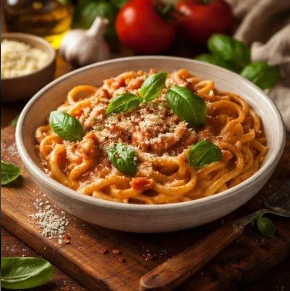

COMFORT FOOD FAVOURITE
Homemade Pasta
A comforting pasta dish with a rich tomato sauce, fragrant herbs, and a sprinkle of Parmesan.
Get the Recipe
SIMPLE & SATISFYING
Pasta with Tomato Sauce
An easy everyday meal made with familiar ingredients and plenty of flavour.
Ingredients
- 250 g pasta of your choice
- 1 tablespoon olive oil
- 2 garlic cloves, finely chopped
- 400 g chopped tomatoes
- 1 teaspoon dried oregano
- Salt and black pepper, to taste
- Fresh basil leaves, optional
- Grated Parmesan cheese, for serving
Instructions
- Bring a large pot of salted water to a boil. Cook the pasta according to the package instructions.
- Meanwhile, heat the olive oil in a frying pan over medium heat.
- Add the garlic and cook briefly until fragrant, taking care not to burn it.
- Stir in the chopped tomatoes and dried oregano. Season with salt and black pepper.
- Let the sauce simmer gently for 10–15 minutes, stirring occasionally.
- Drain the pasta, reserving a little pasta water. Add the pasta to the sauce and toss to combine.
- Add a splash of pasta water if needed. Serve with fresh basil and grated Parmesan.